전자계산기제어산업기사 (2012-09-15 기출문제)
1과목: 전자회로
1. 정류기의 직류 출력전압이 무부하일 때 225[V], 전부하시 출력전압이 200[V] 일 때 전압변동률[%]은?
- 10[%]
- 12.5[%]
- 20[%]
- 25[%]
(정답률: 알수없음)

2. 그림과 같은 회로의 설명으로 옳은 것은?
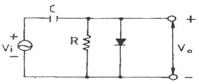
- 클리핑 회로이다.
- 진폭 제한 회로이다.
- 클램프 회로이다.
- 양단 클리핑 회로이다.
(정답률: 알수없음)
3. 다음 회로에서 구형파 입력에 대한 출력 파형으로 가장 적합한 것은?
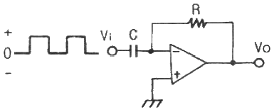
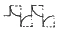
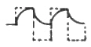
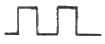
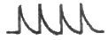
(정답률: 알수없음)
4. 다음 중 FET의 3 정수에 해당되지 않는 것은?
- 전압 증폭률
- 드레인 전류
- 드레인 저항
- 상호 콘덕턴스
(정답률: 알수없음)
5. α0 = 0.96, fα = 1[kHz]인 트랜지스터가 f = 2[kHz]에서 동작할 때 전류 증폭도의 크기는 약 얼마인가?
- 0.57
- 0.54
- 0.46
- 0.43
(정답률: 알수없음)
6. C급 증폭기에 관한 설명 중 옳지 않은 것은?
- 유통각을 적게 하면 효율이 높아진다.
- C급 증폭기는 왜율이 높다.
- 유통각 θ = 0 일 때 효율은 90[%] 이다.
- 유통각 θ = π 인 경우 B급 동작에 해당된다.
(정답률: 알수없음)
7. 이상적인 연산 증폭기의 특징으로 적합하지 않은 것은?
- 출력 임피던스가 0 이다.
- 입력 오프셋 전압이 0 이다.
- 동상신호제거비가 0 이다.
- 주파수 대역폭이 무한대이다.
(정답률: 알수없음)
8. 잡음이 많은 전송로를 통한 신호 전송에 가장 유리한 펄스 변조 방식은?
- 펄스 폭 변조(PWM)
- 펄스 진폭 변조(PAM)
- 펄스 부호 변조(PCM)
- 펄스 위치 변조(PPM)
(정답률: 알수없음)
9. 진폭변조(DSB) 방시겡서 변조도를 80[%]로 하면 피변조파의 전력은 반송파 전력의 몇 배가 되는가?
- 1.1배
- 1.32배
- 1.64배
- 2.16배
(정답률: 알수없음)
10. 전력증폭기의 직류 공급 전압은 15[V], 전류는 300[mA] 이고 효율은 78.5[%]일때 부하에서의 출력 전력은?
- 약 3.53[W]
- 약 4.50[W]
- 약 353[W]
- 약 450[W]
(정답률: 알수없음)
11. 부저항(negative resistance) 특성을 가진 다이오드는?
- 쇼트키 다이오드
- 터널 다이오드
- 레이저 다이오드
- 제너 다이오드
(정답률: 알수없음)
12. 직렬 전류 궤환증폭기의 궤환신호 성분은?
- 전압
- 전류
- 전압과 전류
- 전압 혹은 전류
(정답률: 알수없음)
13. 이미터 플로우 증폭기에 대한 설명으로 적합하지 않은 것은?
- 전류이득은 크다.
- 전압이득은 1 에 가깝다.
- 입력임피던스는 매우 높다.
- 출력은 컬렉터 단자에서 얻는다.
(정답률: 알수없음)
14. 궤환 발진기의 발진 조건에 대한 설명 중 옳지 않은 것은? (단, A는 증폭도, β는 궤환량이다.)
- 정궤환을 이용한다.
- A의 위상 변화는 180° 이다.
- β의 위상 변화는 180° 이다.
- 궤환 이득 Aβ = 1 이며, 위상 변화는 180° 이다.
(정답률: 알수없음)
15. 무궤환 시 증폭도를 A, 궤환 시 증폭도를 Af, 궤환율을 β라 할 때, A가 대단히 크면 Af는 주로 무엇에 의해서 결정되는가?
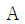
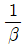
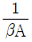
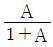
(정답률: 알수없음)
16. 리미터를 필요로 하지 않는 주파수 복조회로는?
- 제곱 검파회로
- 복동조 주파수 변별 회로
- 포스터 실리(forster-seeley) 주파수 변별 회로
- 비검파기(ratio detector)
(정답률: 알수없음)
17. 다음 중 정전압회로에서 전류를 제한하는 이유로 가장 적합한 것은?
- 전압변동률을 개선하기 위하여
- 일정한 출력전압을 유지하기 위하여
- 변압기의 소손을 방지하기 위하여
- 정전압회로를 보호하기 위하여
(정답률: 알수없음)
18. 시스템의 출력 펄스에서 오버슈트가 발생하는 이유는?
- 시스템의 하한 차단 주파수가 0 인 경우
- 시스템이 전역 대역폭을 가지고 있는 경우
- 시스템이 고주파수 고조파를 과도하게 강조할 경우
- 시스템이 저주파수 고조파를 과도하게 강조할 경우
(정답률: 알수없음)
19. 발진회로에서 수정진동자를 많이 사용하는 이유는? (단, Q = Quality Factor)
- Q의 값이 낮기 때문이다.
- 발진주파수 변화가 용이하기 때문이다.
- Q의 값이 중간이기 때문이다.
- Q의 값이 높기 때문이다.
(정답률: 알수없음)
20. 다음 중 부궤환 증폭회로의 특징으로 옳지 않은 것은?
- 이득이 증가한다.
- 잡음이 감소한다.
- 대역폭이 넓어진다.
- 주파수 특성이 좋아진다.
(정답률: 알수없음)
2과목: 디지털공학
21. 10진수 12.625를 2진수로 변환하면?
- 1100.0101
- 1100.101
- 1110.0101
- 1110.101
(정답률: 알수없음)
22. 10개의 입력 선과 16개의 출력 선을 갖는 ROM이 있다. 이 ROM의 전체 비트 수는?
- 10 × 16
- 210 × 16
- 10 × 2
- 210 × 216
(정답률: 알수없음)
23. 4×1 멀티플렉서를 이용하여 논리회로를 구현한 것으로 옳은 것은?
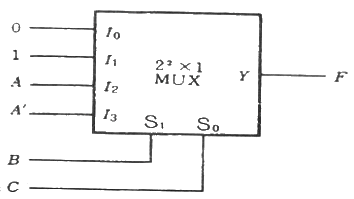
- F(A, B, C) = ∑(1, 3, 4, 6)
- F(A, B, C) = ∑(1, 3, 5, 7)
- F(A, B, C) = ∑(1, 2, 4, 7)
- F(A, B, C) = ∑(1, 3, 5, 6)
(정답률: 알수없음)
24. Gray code 1101을 2진수로 변환한 것은?
- 1010
- 1001
- 1000
- 1100
(정답률: 알수없음)
25. ASCII 코드는 몇 개의 비트로 구성되는가? (단, 패리티 비트는 제외한다.)
- 4
- 5
- 7
- 8
(정답률: 알수없음)
26. 1024×8 Memory 시스템을 구성하기 위해서 128×4 RAM을 사용할 경우 몇 개의 RAM이 필요한가?
- 8개
- 10개
- 15개
- 16개
(정답률: 알수없음)
27. 다음 식 중 드모르간의 법칙을 나타낸 것은?
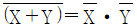
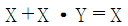
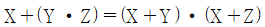
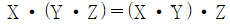
(정답률: 알수없음)
28. 다음 회로 중 조합논리회로가 아닌 것은?
- 디코더
- 멀티플렉서
- 가산기
- 카운터
(정답률: 알수없음)
29. 5bit 2진(binary) 카운터가 00000 상태에서 계수를 시작한다고 가정하면 144개의 펄스가 입력된 후 계수 상태는 어떤 상태인가?
- (00000)2
- (11111)2
- (10000)2
- (00001)2
(정답률: 알수없음)
30. n비트의 입력으로 2n개의 출력 중의 하나로 1로 설정하도록 하는 장치는?
- 디코더
- 인코더
- 카운터
- 플립플롭
(정답률: 알수없음)
31. 논리식
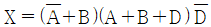
를 간소화한 것은?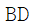
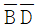
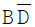
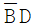
(정답률: 알수없음)
32. JK 플립플롭에서 J = 1, K = 1 일 때 Qn+1의 출력 상태는?
- 반전
- 변화가 없다.
- 1
- 0
(정답률: 알수없음)
33. 하나의 입력 단자를 가지며 입력이 1일 때 출력이 반전되는 플립플롭은?
- D
- RS
- T
- JK
(정답률: 알수없음)
34. MOD-5 계수기를 구성하는데 필요한 최소 플립플롭 수는?
- 2
- 3
- 4
- 5
(정답률: 알수없음)
35. 에러(error)를 검출하여 교정할 수 있는 코드는?
- Hamming Code
- ASCII Code
- Gray Code
- 3초과 Code
(정답률: 알수없음)
36. 다음 회로를 간략화 하면?
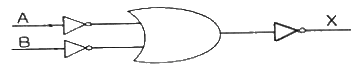
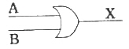
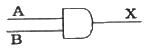
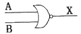
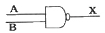
(정답률: 알수없음)
37. 그림의 모드(mod) 8진 리플 카운터에서 클록 펄스 2가 첨가된 후 2진 계수 결과로 옳은 것은?
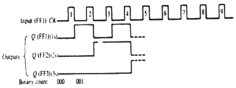
- 011
- 100
- 001
- 010
(정답률: 알수없음)
38. 다음과 같은 회로를 나타내는 식은?
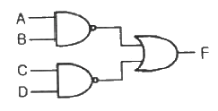
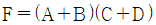
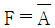
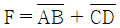
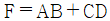
(정답률: 알수없음)
39. 카운터에 대한 설명 중 옳지 않은 것은?
- 입력 펄스의 상승 시간에 동기되어 각 플립플롭이 동시에 동작하는 카운터를 동기식 카운터라 한다.
- 상향 또는 하향으로 카운트할 수 있도록 만들어진 카운터를 UP/DOWN 카운터라 한다.
- 링 카운터에서 각각의 플립플롭은 외부의 트리거원으로부터 신호를 받는다.
- 비동기식 카운터는 출력의 위상차가 거의 없어 일그러짐이 매우 적어 현재의 컴퓨터에 많이 쓰인다.
(정답률: 알수없음)
40.
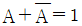
의 쌍대인 것을 표시한 식은?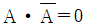
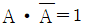
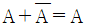
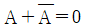
(정답률: 알수없음)
3과목: 마이크로프로세서
41. 다음 중 10진수 –4에 대한 2진수 표현 방법으로 잘못된 것은?
- 부호와 절대치 : 1100
- 부호와 1의 보수 : 1011
- 보호와 2의 보수 : 1100
- 부호와 1의 보수 : 1100
(정답률: 알수없음)
42. 시프트 레지스터에 있는 2진수 A가 6번 왼쪽으로 시프트(Shift-left)되면, 시프트 레지스터의 값은 어떻게 되는가?
- A × 64
- A ÷ 64
- A × 6
- A ÷ 6
(정답률: 알수없음)
43. 8비트 A/D 변환기의 분해능은?
- 1/1024
- 1/512
- 1/256
- 1/128
(정답률: 알수없음)
44. 인터럽트를 발생하는 장치들을 직렬로 연결하여 우선 순위에 따라 처리하게 하는 방식은?
- 다중채널 방식
- Daisy-chain 방식
- Polling 방식
- Interrupt Control 방식
(정답률: 알수없음)
45. 마이크로프로세서에서 정보를 가져다가 메모리 디바이스에 기억시키는 것을 무엇이라 하는가?
- load
- transfer
- fetch
- store
(정답률: 알수없음)
46. 출력(Y3)이 나오는 번지의 범위는?
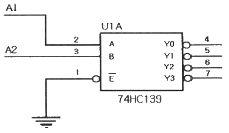
- 0 ~ 1
- 2 ~ 3
- 4 ~ 5
- 6 ~ 7
(정답률: 알수없음)
47. 0-주소 명령형식에서 명령어 길이가 16비트일 때, 연산 코드(Operation Code)의 크기는?
- 4비트
- 8비트
- 16비트
- 32비트
(정답률: 알수없음)
48. 주소지정 방식 중 오퍼랜드가 메모리상의 데이터 주소를 기억하고 그 주소에 기억되어 있는 데이터에 접근하는 방식은?
- 간접 주소지정 방식
- 직접 주소지정 방식
- 인덱스 주소지정 방식
- 즉시 주소지정 방식
(정답률: 알수없음)
49. RAM은 읽고 쓸 수 있는 메모리로서, 크게 SRAM(Static RAM)과 DRAM(Dynamic RAM)으로 구분된다. 다음 중 SRAM의 특성이 아닌 것은?
- 하나의 2진 정보를 저장할 수 있는 플립플롭들로 구성된다.
- 전원이 연결되어 있는 동안 저장되어 있는 정보를 유지한다.
- 사용하기 쉽고 읽기와 쓰기 시간이 짧다.
- MOS 트랜지스터 안의 콘던서에 전하의 형태로 정보를 저장한다.
(정답률: 알수없음)
50. 다음 중 DC 모터의 속도를 제어하는 방식은?
- 워치독(Watchdog) 방식
- PWM(Pulse Width Modulation) 방식
- 바이폴라(bipolar) 방식
- 유니폴라(unipolar) 방식
(정답률: 알수없음)
51. 메모리 어드레스 라인 수가 10개로 메모리 용량이 1KB 이다. 메모리 용량을 4KB로 늘리려고 한다. 메모리 어드레스 수를 최소 몇 개로 해야 하는가?
- 10개
- 11개
- 12개
- 13개
(정답률: 알수없음)
52. 다음 중 스템 모터의 특징이 아닌 것은?
- 스템모터는 펄스에 의해 일정한 각도로 제어하므로 컴퓨터 제어에 용이하다.
- 모터의 회전각은 입력 펄스의 총 개수에 비례한다.
- 회전각 검출을 위한 센서가 필요하다.
- 특정 주파수에 대한 진동, 공진 발생 및 관성이 큰 부하에 약하다.
(정답률: 28%)
53. 연산 명령의 실행 결과는 PSW(Program Status Word) 레지스터를 통하여 나타난다. 연산 결과의 오류를 알 수 있는 플래그는?
- 부호 플래그
- 제로 플래그
- 오버플로우 플래그
- 인터럽트 인에이블 플래그
(정답률: 60%)
54. 외부의 직렬장치와 데이터 전송을 위해 직렬-병렬 상호 변환기능을 수행하는 장치는?
- baud rate
- UART
- Strobe 장치
- Centronics
(정답률: 알수없음)
55. 8⑤1에서의 직렬인터페이스 방식은 어떤 방식인가?
- simplex 방식
- half duplex 방식
- full duplex 방식
- 직렬인터페이스가 없다.
(정답률: 알수없음)
56. 다음 중 마이크로프로세서가 들어가 있지 않은 기기는?
- 백열등
- PLC
- 산업용 ROBOT
- 비행기
(정답률: 알수없음)
57. 다음 설명 중 틀린 것은?
- 타이머/카운터는 대개 정확한 동작을 위해 프로그램시작과 함께 초기화된다.
- 프로그램 내부에서 타이머/카운터 SFR을 제어함으로써 타이머의 동작이 시작된다.
- 프로그램 외부에서 타이머/카운터 SFR을 제어함으로써 타이머의 동작이 멈춘다.
- 동작 플래그 비트는 타이머/카운터가 동작함에 따라 설정되거나 클리어된다.
(정답률: 알수없음)
58. 매크로 연산자 설명 중 옳지 않은 것은?
- 공백(space)은 구분기호이다.
- ＜＞로 닫으면 이 사이에 문자열은 하나의 인수가 된다.
- 문자열 앞에 %을 붙이면 문자열이 가지는 숫자가 인수가 된다.
- 16진수 표기는 .DECIMAL 16 이라고 한다.
(정답률: 알수없음)
59. 타이머에서 입력 신호가 너무 빠르게 들어올 때 느리게 만드는 것은?
- 분주기
- 감산기
- 배수기
- 가산기
(정답률: 알수없음)
60. 저항을 사다리 형태로 배열하여 2진 출력값이 On/Off 상태에 따라 전압이 누적되도록 하는 방식의 D/A 컨버터는?
- 전압 누적 D/A 컨버터
- R-2R 래더 D/A 컨버터
- 축차 비교형 D/A 컨버터
- 2R-4R 래더 D/A 컨버터
(정답률: 알수없음)
4과목: 프로그래밍언어
61. C 언어에서 프로그램의 변수 선언을 “int c;” 로 했을 경우 “&c”는 어떤 의미인가?
- C의 범위
- C의 저장된 값
- C의 기억 장소 주소
- C의 절대값
(정답률: 알수없음)
62. 컴파일 과정의 순서가 옳게 구성된 것은?
- 원시프로그램 → 어휘분석 → 최적화 → 구문분석 → 중간코드 → 목적프로그램
- 원시프로그램 → 어휘분석 → 구문분석 → 최적화 → 중간코드 → 목적프로그램
- 원시프로그램 → 구문분석 → 어휘분석 → 중간코드 → 최적화 → 목적프로그램
- 원시프로그램 → 어휘분석 → 구문분석 → 중간코드 → 최적화 → 목적프로그램
(정답률: 알수없음)
63. 다음 식을 Pre-order 표기로 옳게 표현한 것은?
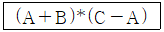
- * + - A B C A
- * + A B – C A
- A B + C A * -
- A B + C A - *
(정답률: 알수없음)
64. 원시 프로그램을 기계어 프로그램으로 번역하는 대신에 기존의 고수준 컴파일러 언어로 전환하는 역할을 수행하는 것은?
- 프리프로세서
- 크로스 컴파일러
- 링커
- 로더
(정답률: 알수없음)
65. 어셈블리어에서 라이브러리에 기억된 내용을 프로시저로 정의하여 서브루틴으로 사용하는 것과 같이 사용할 수 있도록 그 내용을 현재의 프로그램 내에 포함시켜 주는 명령은?
- TITLE
- EVEN
- ORG
- INCLUDE
(정답률: 알수없음)
66. 예약어에 대한 설명으로 틀린 것은?
- 프로그램이 수행되는 동안 변하지 않는 값을 나타내는 데이터이다.
- 프로그래머가 변수 이름으로 사용할 수 없다.
- 번역과정에서 속도를 높여준다.
- 프로그램의 신뢰성을 향상시킨다.
(정답률: 알수없음)
67. C 언어에 대한 설명으로 틀린 것은?
- 번역 과정 없이 실행 가능하다.
- 구조적 프로그래밍이 가능하다.
- 다양한 연산자를 제공한다.
- 이식성이 높은 언어이다.
(정답률: 알수없음)
68. 프로그램의 수행을 위해 호출한 함수를 수행하고 함수를 호출한 위치로 복귀하여야 한다. 이때 복귀할 주소를 저장하기에 적합한 자료구조는?
- 큐(Queue)
- 스택(Stack)
- 트리(Tree)
- 링크드 리스트(Linked List)
(정답률: 알수없음)
69. BNF 표기법에서 택일을 나타내는 기호는?
- ＜＞
- { }
- ::=
- |
(정답률: 알수없음)
70. 원시프로그램을 번역할 때 어셈블러에게 요구되는 동작을 지시하는 명령으로서 기계어로 번역되지 않는 명령어를 무엇이라고 하는가?
- 의사 명령(pseudo instruction)
- 오퍼랜드 명령(operand instruction)
- 기계어 명령(machine instruction)
- 매크로 명령(macro instruction)
(정답률: 알수없음)
71. C 언어의 printf 문에서 10진 정수로 출력하기 위한 변환 문자는?
- %c
- %d
- %s
- %x
(정답률: 알수없음)
72. 벨 연구소에서 1970년대 초반부터 리치 등에 의해서 개발된 시스템 기술용의 프로그래밍 언어로서, UNIX 운영체제를 구성된 주된 언어는?
- C
- APL
- PL/1
- PASCAL
(정답률: 알수없음)
73. C 언어에서 한 문자 출력 함수는?
- putchar ( )
- puts ( )
- getchar ( )
- gets ( )
(정답률: 알수없음)
74. 어셈블러를 두 개의 패스로 구성하는 주된 이유는?
- 패스 1, 2의 어셈블러 프로그램이 작아서 경제적이기 때문에
- 한 개의 패스만을 사용하면 프로그램의 크기가 증가하여 유지보수가 어렵기 때문에
- 한 개의 패스만을 사용하면 메모리가 많이 소용되기 때문에
- 기호를 정의하기 전에 사용할 수 있어 프로그램 작성이 용이하기 때문에
(정답률: 알수없음)
75. 객체지향 프로그래밍에서 하나 이상의 유사한 객체들로 그룹화 되어, 하나의 공통된 특성으로 표현한 것을 무엇이라고 하는가?
- 객체(Object)
- 클래스(Class)
- 프로토콜(Protocol)
- 메소드(Method)
(정답률: 알수없음)
76. C 언어의 기억 클래스(class) 종류가 아닌 것은?
- auto
- static
- dynamic
- register
(정답률: 알수없음)
77. 어셈블리어에서 베이스 레지스터로 지정한 레지스터를 해제하여 다른 용도로 사용할 수 있도록 하는 명령은?
- RELEASE
- DROP
- CANCEL
- USING
(정답률: 알수없음)
78. C 언어에서 문자 데이터를 나타내는 자료형은?
- int
- char
- float
- double
(정답률: 알수없음)
79. 기계어와 비교하여 어셈블리 언어가 갖는 장점이 아닌 것은?
- 프로그램을 읽고 이해하기 쉽다.
- 프로그램의 주소가 기호 번지이다.
- 실행을 위한 기계어로의 번역 과정이 불필요하다.
- 프로그램에 데이터를 사용하기 쉽다.
(정답률: 알수없음)
80. 어셈블리어에서 어떤 기호적 이름에 상수 값을 할당하는 명령은?
- EVEN
- EQU
- ORG
- ASSUME
(정답률: 알수없음)